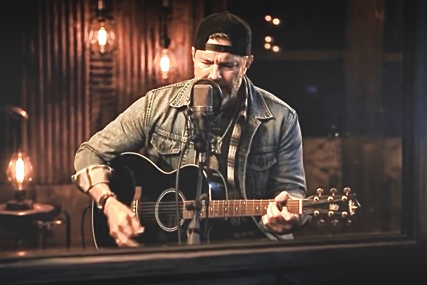

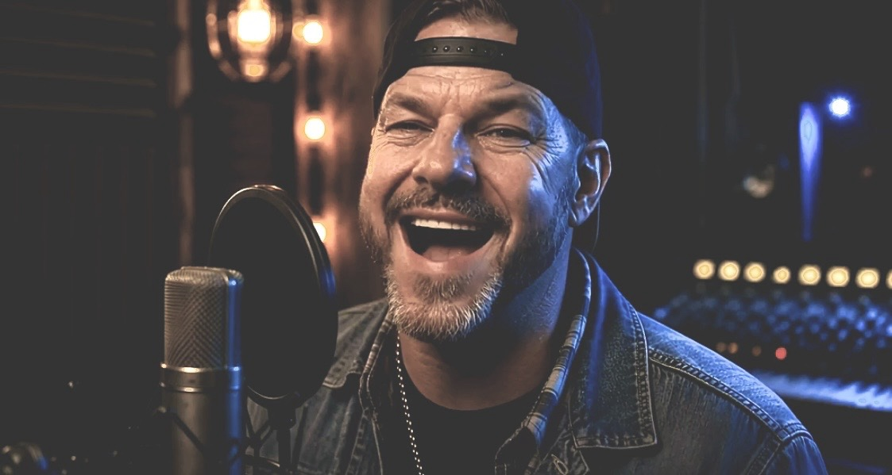
"Country roads,
concrete,
and 808s."
Houston 072 — SWAT Nation
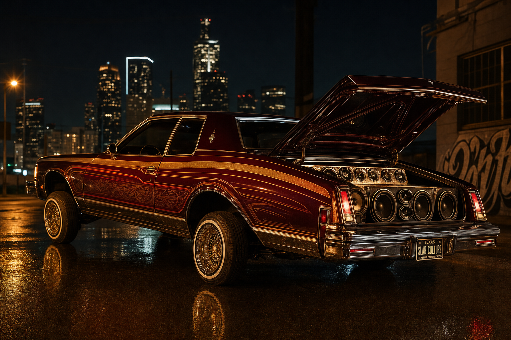
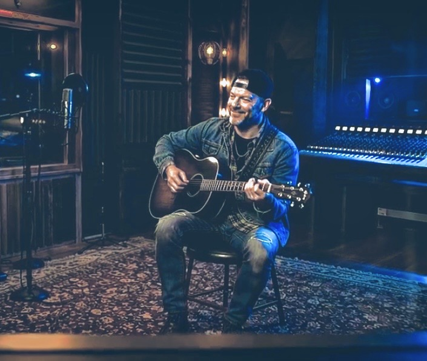
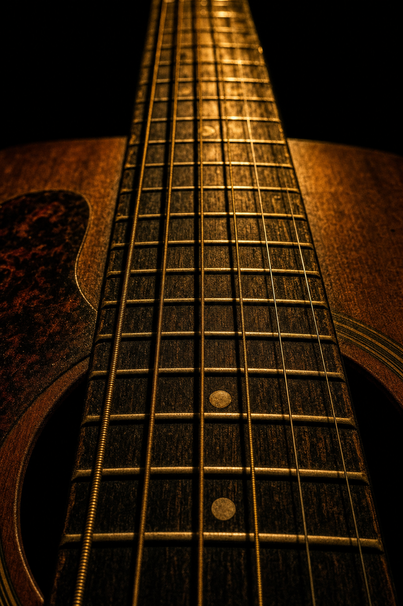
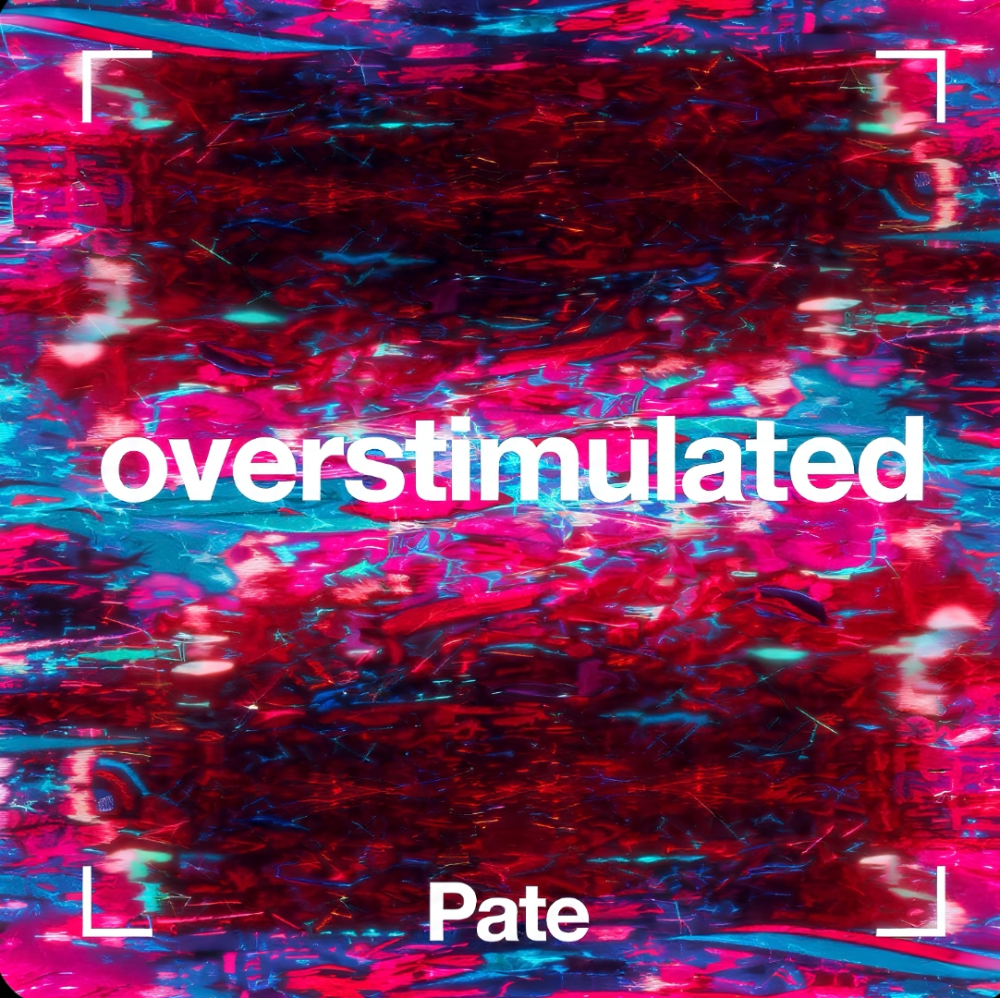
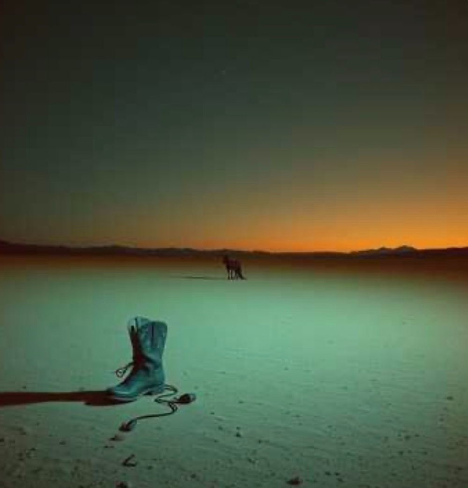

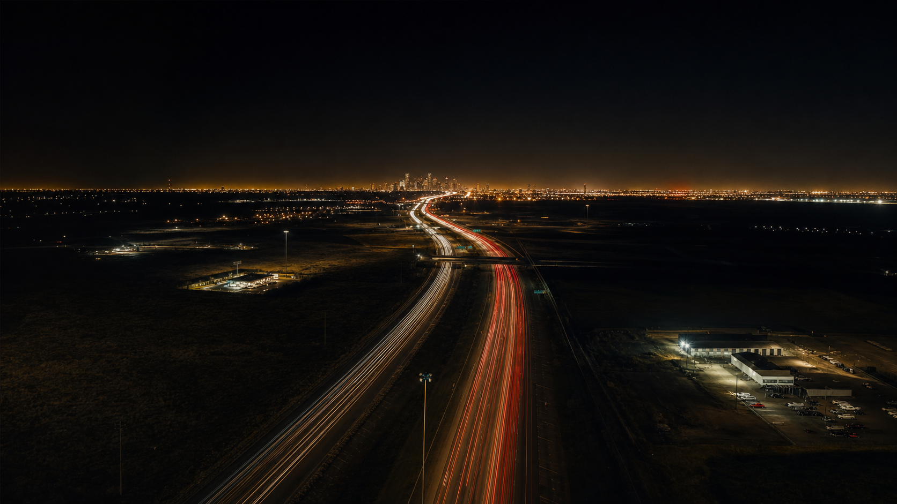
Country × Hip-Hop
In the studio, where the sound lives — twang-soaked storytelling cut with trap rhythm.
Houston 072
Repping SWAT Nation with a crew-first mentality. Built for people who know life doesn't fit a single genre.
The Culture That Made Him
Clubs, Saloons
& Dance Halls
PATE didn't pick his sound off a playlist. He lived it — two-stepping at Wild West on a Friday, then crossing town to Club 6400 before the night was over. Houston was the only city where you could do that. Country floors and hip-hop floors in the same zip code, the same night, the same people.
Houston · 1994 & 1995
Back. To. Back.
Two NBA Championships. Two summers where all of Houston poured into the streets — Rockets jerseys, car horns, strangers hugging like family. Hakeem Olajuwon made this city believe anything was possible. For a kid growing up in the 072, those nights weren’t just sports. They were proof that Houston was something special — and so were the people in it.
That same energy — crew-first, city-proud, built from the ground up — lives in every track PATE makes.
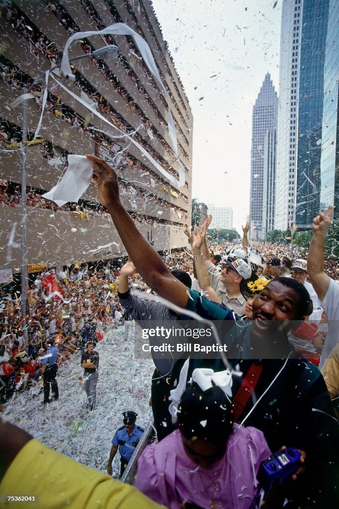
Hakeem · 1995 Parade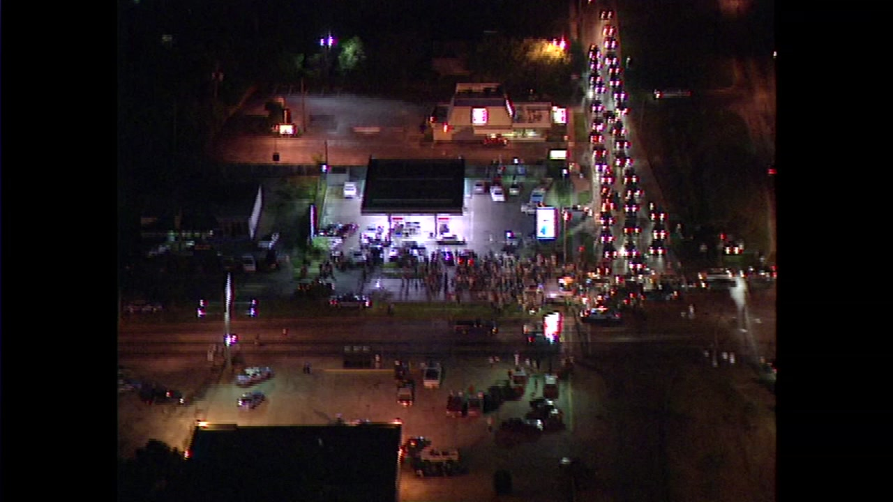
1994 · First Title
Southwest Alief · 072 · Independent
Houston Born. No Walls Between the Sounds.
On the Airwaves
Houston Radio
The stations that built Houston's sound. Click to tune in — and if you hear something that moves you, request PATE.
Houston is one of the few cities where Country and Hip-Hop share the same culture. PATE lives at that intersection.
The Artist
Houston Born.
Two Worlds Fused.
PATE comes out of Houston's 072, carrying the South's full weight — country roads, concrete, the late nights in the booth. His sound refuses to pick a lane. It's twang-soaked storytelling cut with trap rhythm and Houston swagger, built for people who know that life doesn't fit a single genre.
Repping SWAT Nation, PATE moves independently with a crew-first mentality. Growing Up in the 072 is the statement.
Moving With
Brand Partners
Learn. Live. Love to Inspire.
A creative force empowering individuals and uplifting communities through purposeful design and transformative experiences. LTIbyJMichael fuels creativity, cultivates confidence, and inspires lasting impact — Est. 2024.
Shop Inspire"When we saw what PATE was building, it was a perfect alignment. His music carries the same mission we do — learn, live, and love to inspire. We're proud to move with him."
— J. Michaels, Founder & Creative Director, LTIbyJMichael
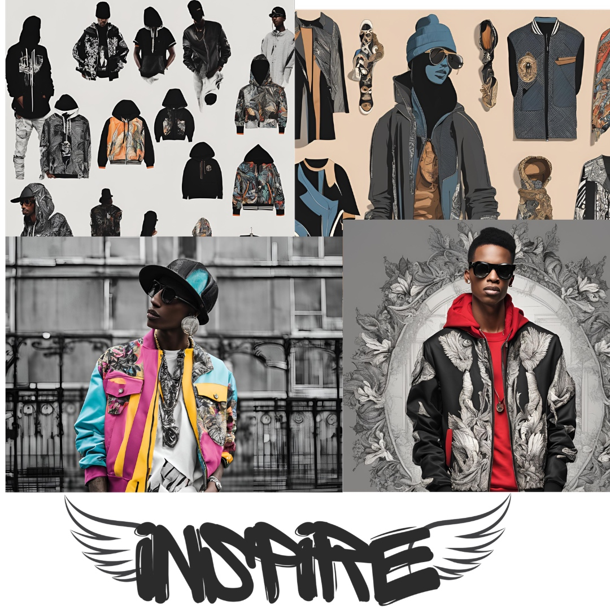
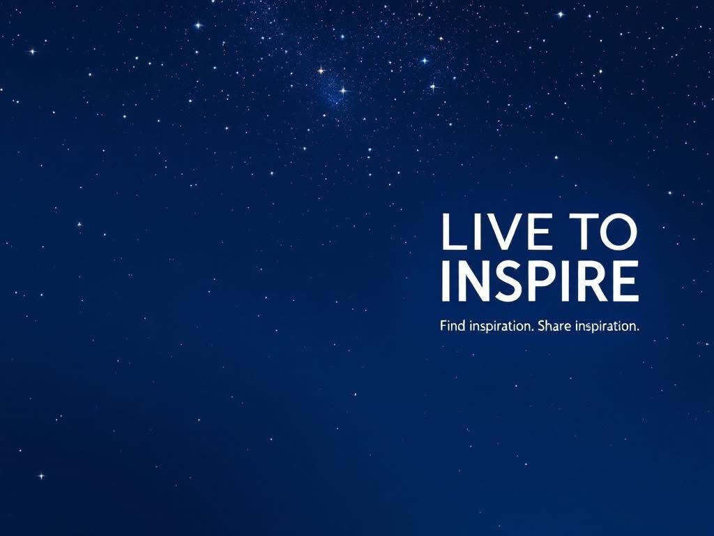
Designs by MYK LLC
Creative Solutions for Creators.
A creative solutions partner specializing in innovative digital design, software, and tools tailored for musicians, artists, and entrepreneurs. Empowering creatives with streamlined, high-quality resources that elevate branding, productivity, and growth.
Connect with MYK"PATE brings an authenticity that's rare. When our team first encountered his sound, we knew immediately — this artist needed visuals and tools that could match that energy. Building alongside SWAT Nation has been one of our best collaborations."
— MYK, Founder, Designs by MYK LLC
Content. Brand. Reach.
Bruso Digital Media LLC
Built for the era where attention is currency. Bruso Digital Media specializes in digital content creation, brand development, and online marketing strategy — helping artists, entrepreneurs, and businesses build a real presence in a crowded digital landscape. From social media architecture to full-scale digital advertising campaigns, Bruso moves with the culture and builds brands that last.
Work With Bruso"We don't just manage content — we engineer visibility. When PATE came to us, the sound was already there. Our job was making sure the world couldn't miss it. That's what Bruso does."
— Bruso Digital Media LLC, Digital Strategy & Brand Development
Stay Connected
Follow PATE
Join the SWAT Nation — get first access to new music, shows, and drops.